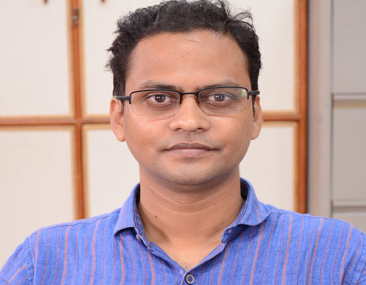

Prof. Sri Niwas Singh
Prof S. N. Singh obtained his M. Tech. and Ph. D. in Electrical Engineering
from Indian Institute of Technology Kanpur, in 1989 and 1995.
Presently, Prof Singh is Director, Atal Bihari Vajpayee-Indian Institute of Information Technology and Management Gwalior (MP), India (on leave from Professor (HAG),
Department of Electrical Engineering, Indian Institute of Technology Kanpur, India).
Before joining IIT Kanpur as Associate Professor, Dr Singh worked with UP State Electricity Board as Assistant Engineer from 1988 to 1996,
with Roorkee University (now IIT Roorkee) as Assistant Professor from 1996 to 2000 and with Asian Institute of Technology, Bangkok, Thailand as Assistant Professor from 2001 to 2002.
He was Vice Chancellor of Madan Mohan Malviya University of Technology Gorakhpur during April 2017 to July 2020. Dr Singh received several awards including Young Engineer Award 2000 of Indian National Academy of Engineering (INAE),
Khosla Research Award of IIT Roorkee, and Young Engineer Award of CBIP New Delhi (India), 1996.
Prof Singh is receipt of Humboldt Fellowship of Germany (2005, 2007) and Ottomonsted Fellowship of Denmark (2009-10). Prof Singh became the first Asian to receive 2013 IEEE Educational Activity Board Meritorious Achievement Award in Continuing Education. He is also recipients of INAE Outstanding Teacher Award 2016 and IEEE R10 region (Asia-Pacific) Outstanding Volunteer Award 2016. Dr Singh is appointed as IEEE Distinguish Lecturer of Power & Energy Society from 2019 and Industry application Society for 2019-2021. He is also recipient of NPSC 2020 Academic Excellence Award and 2021 IEEE Industry Application Society (IAS) Outstanding Educator/ Mentor Award. His research interests include power system restructuring, FACTS, power system optimization & control, security analysis, wind power, etc.
Prof Singh has published more than 500 papers (h-index=57, Citation=12k+) in International/ national journals/conferences and supervised 40 PhD (8 PhD under progress). He has also written 30 book chapters, 8 Edited books and 2 text-books one on Electric Power Generation, Transmission and Distribution and second is Basic Electrical Engineering, published by PHI, India. Prof Singh has completed three dozen of technical projects in India and abroad. His two NPTEL (YouTube) video lectures on HVDC Transmission and Power System Operation & Control are very popular. Prof Singh was Chairman, IEEE UP Section for 2013 & 2014, IEEE R10 (Asia-Pacific) Conference & Technical Seminar Coordinator 2015-18 and R10 Vice-Chair, Technical Activities (2019-2020). Presently Prof Singh is Immediate Past Chairman of IEEE, India Council. Dr Singh is Fellows of IEEE (USA), IET (UK), INAE, IE(I), IETE, AvH.
Prof Singh is receipt of Humboldt Fellowship of Germany (2005, 2007) and Ottomonsted Fellowship of Denmark (2009-10). Prof Singh became the first Asian to receive 2013 IEEE Educational Activity Board Meritorious Achievement Award in Continuing Education. He is also recipients of INAE Outstanding Teacher Award 2016 and IEEE R10 region (Asia-Pacific) Outstanding Volunteer Award 2016. Dr Singh is appointed as IEEE Distinguish Lecturer of Power & Energy Society from 2019 and Industry application Society for 2019-2021. He is also recipient of NPSC 2020 Academic Excellence Award and 2021 IEEE Industry Application Society (IAS) Outstanding Educator/ Mentor Award. His research interests include power system restructuring, FACTS, power system optimization & control, security analysis, wind power, etc.
Prof Singh has published more than 500 papers (h-index=57, Citation=12k+) in International/ national journals/conferences and supervised 40 PhD (8 PhD under progress). He has also written 30 book chapters, 8 Edited books and 2 text-books one on Electric Power Generation, Transmission and Distribution and second is Basic Electrical Engineering, published by PHI, India. Prof Singh has completed three dozen of technical projects in India and abroad. His two NPTEL (YouTube) video lectures on HVDC Transmission and Power System Operation & Control are very popular. Prof Singh was Chairman, IEEE UP Section for 2013 & 2014, IEEE R10 (Asia-Pacific) Conference & Technical Seminar Coordinator 2015-18 and R10 Vice-Chair, Technical Activities (2019-2020). Presently Prof Singh is Immediate Past Chairman of IEEE, India Council. Dr Singh is Fellows of IEEE (USA), IET (UK), INAE, IE(I), IETE, AvH.

Prof. Manisha Pattanaik
Manisha Pattanaik received the Ph.D. degree from the department of Electronics and Electrical and communication engineering from IIT Kharagpur, Kharagpur, India in 2005.
She joined the information and communication technology faculty, ABV-Indian Institute of Information Technology and Management (ABV-IIITM), Gwalior, Madhya Pradesh,India in 2007, where she is currently a professor.
She is working with more than 100 Co-Researchers from industry and academia to create a globally educational excellence. She is the author or coauthor of more than 150 research papers in refereed journals and conferences. She has guided more than 12 Ph.D., 100 Post-graduate and graduate and 50 internship students.
Her research interests include Low Power/Low Voltage Electronics, Nanoscale CMOS Device/Circuits/System Co-Design Characterization, Design of Low Power Logic and Memory Leakage Power Reduction and Ground Bounce Noise Reduction Techniques and reliability aware high performance energy-efficient embedded computing. She has served as several technical program committees and as a reviewer for several journals and conferences.
She is working with more than 100 Co-Researchers from industry and academia to create a globally educational excellence. She is the author or coauthor of more than 150 research papers in refereed journals and conferences. She has guided more than 12 Ph.D., 100 Post-graduate and graduate and 50 internship students.
Her research interests include Low Power/Low Voltage Electronics, Nanoscale CMOS Device/Circuits/System Co-Design Characterization, Design of Low Power Logic and Memory Leakage Power Reduction and Ground Bounce Noise Reduction Techniques and reliability aware high performance energy-efficient embedded computing. She has served as several technical program committees and as a reviewer for several journals and conferences.

Dr. Gaurav Kaushal
Dr. Gaurav Kaushal received the Ph.D. degree from Indian Institute of Technology Roorkee, and M. Tech. degree from M.A.N.I.T. Bhopal in 2013 and, 2008 respectively.
He has authored and coauthored over 17 papers in journals and conference proceedings in various areas of CMOS devices and circuits. He has post-doctoral experience in VLSI System Laboratory, Yonsei University, South Korea, from May’ 2014 to August 2015.
He is a member of IEEE Electronic Devices. He is a reviewer of IET Circuits, IEEE TDMR, and IEEE Transactions on Electronics Devices. He served in National Institute of Technology Patna, India from August’ 2015 – May’2017. Presently he is with ABV-Indian Institute of Information Technology & Management (IIITM), Gwalior, India.
His research interests include novel CMOS devices such as nanowire/FinFET, circuit co-design and device modelling.

Dr. Somesh Kumar
Dr. Somesh Kumar joined the ABV-IIITM in 2019, where he is currently an Assistant Professor. Before joining IIITM Gwalior,
Dr. Kumar was an Assistant Professor at the Indian Institute of Information Technology Nagpur (IIITN), Nagpur. All along his tenure at IIIT Nagpur, he has initiated activities in the area of VLSI Design and Nanoelectronics.
He has established the HDL Lab, Digital and Analog Electronics Lab for undergraduate studies. Dr. Kumar received the B. Tech. degree in Electronics and Telecommunication Engineering from Kurukshetra University (Ch. Devilal Memorial Government Engineering College) in 2009, the M. Tech degree in VLSI Design & CAD from Thapar University in 2012 under the supervision of Prof. Ravi Kumar.
He did Ph. D. degree in Electrical Engineering from Indian Institute of Technology Ropar (IIT Ropar) in 2018. His Ph. D. supervisor was Prof. Rohit Y. Sharma - with whom he learned the rudiments of high-speed interconnect design and 3D IC Design. During his doctoral studies, he worked on modeling, fabrication and performance benchmarking of on-chip and chip-to-chip interconnects considering surface roughness.
His current research interests include design and fabrication of high-speed chip-chip, on-chip and 3D interconnects. Recently, he also started working on graphene based and flexible devices. He is a referee for several journals including IEEE Transactions on Electromagnetic Compatibility, IEEE Transactions on Emerging Topics in Computing, IEEE Transactions on Components, Packaging and Manufacturing Techniques, IET Digital & computer techniques and Journal of Supercomputing.
He is a Senior Member of the IEEE and convener of IEEE student branch at ABV-IIITM, Gwalior.

Dr. Binod Prasad
Dr. Binod Prasad is currently working as an Assistant Professor at Atal Bihari Vajpayee-Indian Institute of Information Technology & Management, Gwalior. Prior to this, he was associated with Indian Institute of Technology Guwahati as a Post doctoral Fellow.
He completed his Ph.D. from National Institute of Technology Durgapur in the area of wireless communication in 2017. His research interests include Cognitive radio networks, Co-operative Communication, Energy Harvesting in Cognitive Radio Networks, and Physical Layer Security.
He is also serving as a reviewer to IEEE Access and Wiley journals.

Dr. Vinal Patel
Dr. Vinal Patel (Member, IEEE) received the Bachelor of Technology degree in electronics and telecommunication engineering from Chhattisgarh Swami Vivekananda Technical University, Bhilai, India,in 2010, the Master of Technology degree in signal processing from IIT Guwahati, Guwahati, India, in 2013, and the Ph.D. degree in electrical sciences from IIT Gandhinagar, Gandhinagar, India, in 2018.
He worked as a senior research fellow in ISVR, University of Southamptom, UK from 2018 to 2019.
He is currently an Assistant Professor with the Department of Information Technology, ABV-Indian Institute of Information Technology and Management, Gwalior, India. His research interests include active noise control, adaptive signal processing, and neural network.

Dr. Pinku Ranjan
Dr. Pinku Ranjan born in Nalanda (Bihar), India, in 1988. He is working as an Assistant Professor in ABV-IIITM Gwalior, M.P, India. He received his Ph.D degree from Indian Institute of Technology (Indian School of Mines), Dhanbad, India in 2017. He received his B. Tech in Electronics and Communication Engineering from Jawaharlal Nehru Technological University (JNTU) Hyderabad, India in 2010.
He has authored or coauthored for more than 30 research paper in international/ national journal/conference proceedings. He is a reviewer of many international/
national journal/conference proceedings like IEEE Transactions on Image Processing, IEEE Access, AEU: International Journal of Electronics and Communications, Elsevier. His research interests include Dielectric Resonator Antenna, MIMO 5G Antenna, Monopole Antenna, multiband Hybrid Antennas, Circularly Polarized.